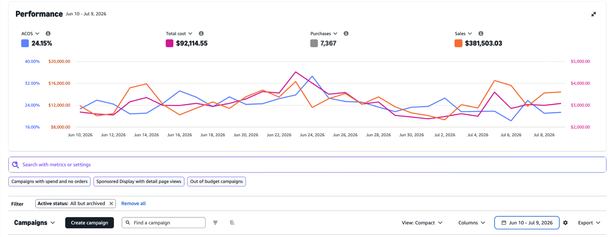

Overview
The account was already operating at a relatively stable efficiency level. The objective was not simply to reduce ACOS; it was to identify additional sources of demand and increase order volume without allowing efficiency to deteriorate materially.
| Metric | Previous 30 days | Current 30 days | Change |
|---|---|---|---|
| Ad Spend | $92,114.55 | $102,933.75 | +11.7% |
| Ad Sales | $381,503.03 | $422,017.09 | +10.6% |
| Purchases | 7,367 | 8,618 | +17.0% |
| ACOS | 24.15% | 24.39% | +0.24 pp |
| ROAS | 4.14x | 4.10x | Broadly flat |
| Cost / Purchase | $12.50 | $11.94 | -4.5% |
1. Increased promotional support
I increased the use of promotional deals around relevant products to strengthen the customer offer and support conversion. PPC was treated as part of the wider commercial system rather than in isolation.
2. AI-assisted opportunity analysis
I used Claude as part of the analysis workflow to identify untargeted opportunities, targeting gaps and areas suitable for broader catch-all coverage. AI supported discovery; final decisions still relied on campaign performance, conversion potential, CPC and product economics.
3. Catch-all campaign expansion
I expanded catch-all targeting to capture additional relevant traffic that existing campaign structures were not reaching. This provided another discovery layer for long-tail demand, new search terms and product-targeting opportunities.
4. Amazon Business placement
Amazon Business placement performed particularly well during the period. Based on observed performance, I increased focus where the data supported incremental investment rather than applying placement changes broadly.
5. Competitor targeting from behavior signals
I looked for lower-end competitors showing relatively high click share but weaker conversion. The hypothesis was that high engagement with weak conversion could signal an opportunity to present shoppers with a stronger alternative. Selected products were then used for targeted product/ASIN expansion.
Performance evidence
Previous 30 days — Jun 10 to Jul 9, 2026

Click image to enlarge.
Current 30 days — Jul 10 to Aug 9, 2026

Click image to enlarge.
Outcome
Advertising investment increased 11.7%, attributed ad sales grew 10.6%, and purchases rose 17%. ACOS stayed close to 24%, while advertising cost per purchase improved from approximately $12.50 to $11.94.
The key idea is simple: scale by finding additional sources of efficient demand—not by increasing budgets everywhere.
Operating philosophy
Revenue + Profitability + Efficiency + Growth
I evaluate Amazon PPC across campaign performance, search terms, keywords, products, placements, budget utilization and product economics, comparing multiple time windows rather than reacting to short-term fluctuations.